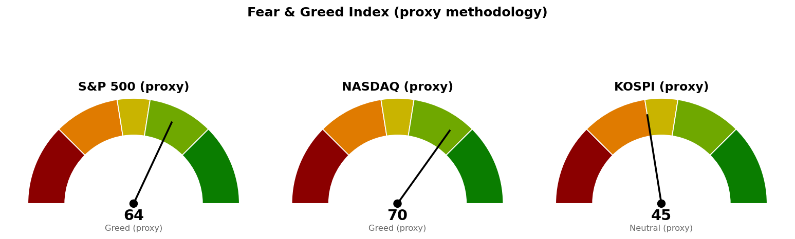

| 직전에 건 조건 | 판정 | 근거 |
|---|---|---|
| 나스닥 기준선 27,159 (종가 상회) | 진행 중 | 9/30 장중 고가 27,096 · 현재 27,063 |
| S&P 500 기준선 7,794 (종가 상회) | 미충족 | 9/30 장중 고가 7,723 |
| S&P 500 다음 지지 · 사다리 1차 7,653 | 미충족 | 9/30 장중 저가 7,689 (시가와 같음) |
| 나스닥 다음 지지 · 사다리 1차 26,680 | 미충족 | 9/30 장중 저가 26,885 |
| 코스피 다음 지지 6,830 (9/30 종가 하회) | 미충족 (잠정) | 9/30 잠정 종가 6,862 · 장중 저가 6,818 |
| 코스피 기준선 7,054 (종가 상회) | 미충족 | 9/30 고가 6,966 |
| 30년 금리 5.286% 아래 (종가) | 미충족 | 9/30 장중 5.632% (전일 5.594%) |
직전 브리핑이 다음 세션에 볼 것으로 남긴 코스피 6,830은 장중 6,818까지 내줬다가 6,862에서 마쳐 종가로는 지켰습니다. 다만 이 종가는 시간별 자료의 마지막 체결가로 채운 잠정값이며, 9월 29일에 같은 방식의 값이 확정 종가와 45포인트 달랐던 일이 있어 판정을 확정하지 않습니다. 어느 지수도 "못 지키면" 갈래로 들어가지 않았고, 기준선·다음 지지·사다리·취소선은 세 지수 모두 직전과 같습니다.
직전 브리핑은 나스닥 27,159 위에 가격 근거가 없다고 적었으나, 9월 22일 스윙 고점 27,289와 27,400 라운드가 겹친 구간이 이미 있었습니다. 누락을 정정해 이번에 도착지 27,289를 추가합니다.
20일선·50일선은 지수이동평균(최근 가격에 무게를 더 둔 평균)입니다. 미국 두 지수는 9월 30일 장중 값이고, 코스피는 9월 30일 잠정 종가입니다.
오늘 시가가 저가였고 20일선 위로 올라섰습니다. 기준선 7,794와 사다리 1차 7,653 모두 한 세션에 닿을 수 있는 거리입니다.
기준선은 오늘 세션 안에 닿는 거리이고, 기준선을 넘겨 마치면 도착지 27,289까지는 130포인트입니다. 27,289 위로는 27,400 라운드 말고 가격 근거가 없습니다.
미국 두 지수는 기준선 쪽으로, 코스피는 20일선과 다음 지지 사이에 붙어 있어 방향이 다릅니다. 코스피의 10월 1일 시가는 오늘 밤 뉴욕 종가가 먼저 정하므로 코스피 계획은 미국장 결과에 종속됩니다. 경로를 말할 근거는 미국 두 지수의 오늘 종가 판정 전까지 없으므로 기준선과 두 갈래만 냅니다. 세 지수 회차를 전부 집행하면 계좌의 16%(22,319,744원), 모두 취소선에서 멈추면 계좌 -0.23%(-318,663원)이며 갭으로 취소선을 건너뛰면 손실은 더 커집니다.
| 지수 | 값 | 등락 | 시가 | 고가 | 저가 |
|---|---|---|---|---|---|
| S&P 500 (9/30 장중) | 7,717 | +0.59% | 7,689 | 7,723 | 7,689 |
| 나스닥 종합 (9/30 장중) | 27,063 | +0.99% | 26,893 | 27,096 | 26,885 |
| 코스피 (9/30 잠정 종가) | 6,862 | -0.13% | 6,943 | 6,966 | 6,818 |
| 니케이 225 (9/30 잠정 종가) | 66,864 | +2.11% | 66,129 | 66,946 | 66,014 |
미국 주도섹터는 20일 기준 기술 하나입니다. 직전에 0 위였던 헬스케어가 오늘 -0.79%포인트 뒤처지며 0 아래로 내려갔고, 커뮤니케이션은 0% 부근입니다. 오늘 장중 지수보다 강한 업종은 기술(+1.19%)·에너지(+0.68%)·커뮤니케이션(+0.63%) 셋이고 나머지 여덟은 전부 지수에 뒤처져, 지수 상승이 기술 한 업종에서 나오고 있습니다.
한국 섹터는 테마형 ETF 기준이라 미국 업종 ETF와 성격이 다릅니다. 20일 기준 지수를 이기는 곳은 반도체 하나로 직전과 같습니다. 이번 브리핑에서는 종목 발굴을 돌리지 않았습니다.
| 항목 | 값 | 직전 대비 |
|---|---|---|
| 미국 경기선행지수 (2026년 8월) | 100.96 | 7월 100.89 대비 +0.06 · 직전과 같은 값 |
| 한국 경기선행지수 (2026년 8월) | 102.87 | 7월 102.81 대비 +0.06 · 직전과 같은 값 |
| 미 10년 명목금리 | 5.24% (9/28 확정) · 9/30 장중 지수 시세 5.272% | 시세 전일 5.255% 대비 +0.017%포인트 |
| 미 10년 기대물가 | 2.35% (9/29) | 직전과 같음 (새 값 없음) |
| 미 10년 실질금리 | 2.90% (9/28) | 직전과 같음 (새 값 없음) |
| 유가 (WTI) | 확정치 96.41달러 (9/22) · 선물 91.77달러 (9/30 장중) | 선물 전일 89.38달러 대비 +2.67% |
| 달러지수 (광의) | 120.33 (9/25) | 직전과 같음 (새 값 없음) |
| 변동성지수 (VIX) | 15.90 (9/30 장중) | 전일 16.04 대비 -0.87% · 백분위 42.3 |
경기선행지수는 장기 평균을 100으로 놓고 경기 방향을 몇 달 앞서 보여주는 지표(OECD 작성)이며, 새 발표가 없어 해석도 직전과 같습니다. 8월 근원 PCE가 예상보다 낮게 나온 날 10년·30년 금리 시세는 각각 5.272%·5.632%로 올랐습니다. 공식 기대물가·실질금리는 9월 29일 이후 값이 없어 오늘 금리 상승이 어느 쪽에서 왔는지는 가르지 못합니다.
1. 8월 근원 PCE 물가 3.0%, 예상 3.3%보다 낮아 (CNBC) 연준이 목표 판단에 쓰는 물가가 예상보다 0.3%포인트 낮았지만, 같은 날 30년 금리 시세는 5.594%에서 5.632%로 올라 신규 종목 편입 재개 조건 5.286%와의 거리가 벌어졌습니다. 물가 지표가 금리를 끌어내리지 못한 상태에서 지수가 오르는 중입니다.
2. 9월 민간고용(ADP) 9만 명 증가, 예상 상회 (CNBC) 직전 브리핑이 인용한 예측시장의 고용 예상 상회 쪽에 무게를 더하는 숫자입니다. 10월 2일 고용보고서가 강하게 나오면 금리 시세를 거쳐 나스닥 27,159 · S&P 500 7,794 기준선 판정에 닿습니다.
3. 9월 S&P 500은 소폭 올랐지만 구성 종목의 4분의 3은 하락 (MarketWatch) 미국 20일 초과수익에서 기술만 지수를 이기고 열 업종이 지수에 뒤처진 것과 같은 사실입니다. 지수 기준선을 넘더라도 그 상승이 기술 한 업종에 실려 있다는 점은 사다리 비중을 늘릴 근거가 되지 않습니다.
279건을 받아 10건을 추렸고, 나머지 7건은 개인 재무 상담·거래 플랫폼 소식 등 지수 판단과 관계가 약해 뺐습니다.

세 점수 모두 공식 CNN Fear & Greed 지수가 아니라 모멘텀·상대강도·변동성·안전자산 선호 네 항목으로 계산한 대용 지표입니다. 변동성 항목은 자기 과거 3년 분포에서의 자리로 산출하며, 미국은 변동성지수 15.9가 백분위 42.3(754일), 코스피는 내재변동성 지수가 없어 20일 실현변동성 연율화 31.9%가 백분위 71.4(707일)입니다. 네 항목은 나스닥 66.7 · 59.7 · 57.7 · 93.5, S&P 500 61.7 · 53.9 · 57.7 · 80.6, 코스피 41.1 · 50.7 · 28.6 · 61.4입니다. 코스피는 직전 공포 구간에서 중립으로 올라왔습니다.
| 날짜 (한국시간) | 이벤트 | 확인할 것 |
|---|---|---|
| 10월 1일 05:00 | 뉴욕 마감 (미국 9/30) | 나스닥 27,159 종가 상회 여부 · S&P 500 7,653 위 마감 · 30년 금리 5.286% |
| 10월 1일 오전 | 코스피 9/30 확정 종가 | 잠정 6,862와 같은지, 6,830 위인지 |
| 10월 1일 15:30 | 코스피 마감 | 6,830 종가 위 마감 여부 |
| 10월 1일 (미국) | 신규 실업수당 청구 | 고용 흐름 |
| 10월 2일 (미국) | 고용보고서 · 실업률 | ADP 예상 상회가 이어지는지 |
10월 1~2일 일정은 경제지표 일정 조회로 확인했습니다. 10월 14일 CPI · 10월 28일 FOMC는 이전 브리핑이 적어 둔 일정입니다.
장부 보유 16종목, 매도 기록 없음. 계좌 평가액 139,498,400원(9월 21일 등록값). 국면은 S&P 500 200일 이동평균 7,213 대비 +6.34%(9/29 종가), 코스피 6,296 대비 +8.99%(9/30 잠정 종가)로 두 시장 모두 신규 진입이 가능한 국면입니다.
1. 매수 쪽 — 지금 가격에는 살 자리가 없습니다. S&P 500 1차 7,653은 현재가에서 64포인트, 나스닥 1차 26,680은 383포인트 아래이며 각 계좌의 3%(4,184,952원)를 장중 터치로 집행합니다. 7,517 · 25,967을 일봉 종가로 잃으면 남은 회차를 멈춥니다. 2. 나스닥이 오늘 종가로 27,159를 넘어도 그 가격에서 추격 매수하지 않습니다. 상방 전환은 사다리를 올리는 근거가 아니며, 다음 브리핑이 27,289 위의 새 기준선으로 다시 잡습니다. 3. 코스피 회차는 6,673 · 6,651 그대로이며 잠정 종가에서 189포인트 아래입니다. 7,054 종가 회복 전에는 기준선 위 추격을 하지 않습니다. 4. TQQQ (TQQQ) 50주는 나스닥 3배 추종이라 나스닥 1차를 집행하면 같은 방향 노출이 겹칩니다. 5. 신규 종목 편입은 30년 금리가 종가로 5.286% 아래일 때 재개합니다(9/30 장중 5.632%). 6. 매도 신호 뒤 체결 기록이 없는 보유: 현대해상 (001450.KS) 10주는 9/29 목표 50,500원에 이어 9/30 집행 손절 47,400원에도 닿았고, 한화손해보험 (000370.KS) 50주는 9/28 목표 7,920원에 이어 9/30 집행 손절 7,690원에 닿았습니다. AMD (AMD) 3주는 9/25 목표 638달러입니다. 매도했으면 수량·단가·날짜를 알려 주십시오. 7. 그 밖의 미집행 매도 신호는 USA Rare Earth (USAR) 7회 · Netflix (NFLX) 3회 · MP Materials (MP) · Alibaba (BABA) · GE Vernova (GEV) 각 1회로 직전과 같고, 장기 보유로 둔 Fluence Energy (FLNC) 6회 · LightPath (LPTH) 2회는 기록만 쌓입니다. 사실을 적을 뿐 매도를 권하는 것이 아닙니다.
다음 세션에 볼 것 하나 — 오늘 밤 뉴욕 마감에서 나스닥 종가가 27,159 위인지입니다.
ATR(하루 평균 변동폭): 최근 14일 동안 하루에 오르내린 폭의 평균. · EMA(지수이동평균): 최근 가격에 더 무게를 준 평균 가격선이며 20일선·50일선은 이 방식입니다. · RSI(상대강도지수): 최근 14일 오른 폭과 내린 폭의 비율을 0~100으로 나타낸 값. · 20일 초과수익: 최근 20거래일 수익률에서 기준 지수 수익률을 뺀 값. · VIX(변동성지수): S&P 500 옵션에 반영된 향후 30일 예상 변동폭. · PCE: 연준이 물가 목표 판단에 쓰는 개인소비지출 물가지수. · ADP: 민간 급여대행사가 집계하는 민간 고용 증가 수. · 기대물가: 명목금리와 물가연동채 금리의 차이로 시장이 보는 평균 물가상승률. · 실질금리: 물가연동국채가 직접 주는 금리.
이 문서는 참고 정보이며 투자자문이 아닙니다. 투자 판단과 그 결과에 대한 책임은 투자자 본인에게 있습니다.